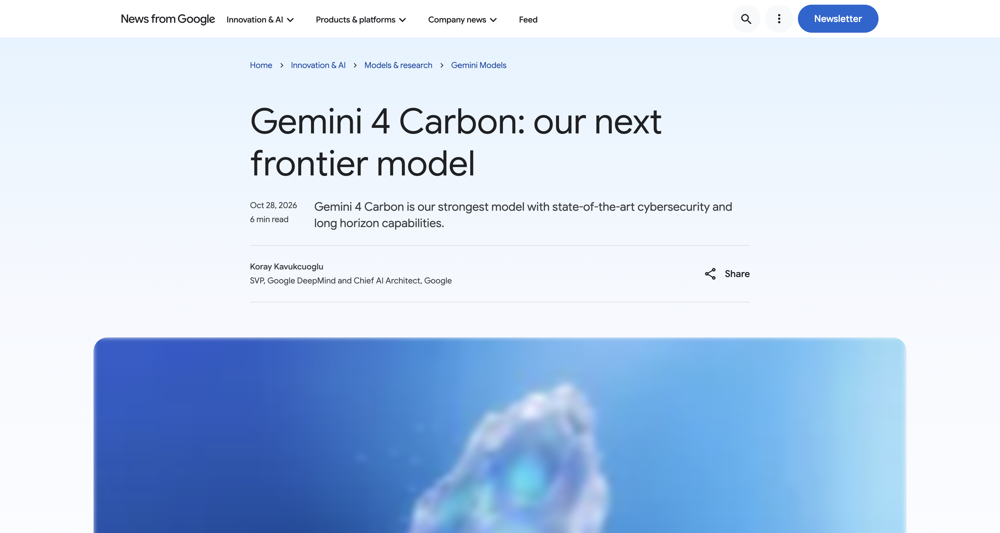
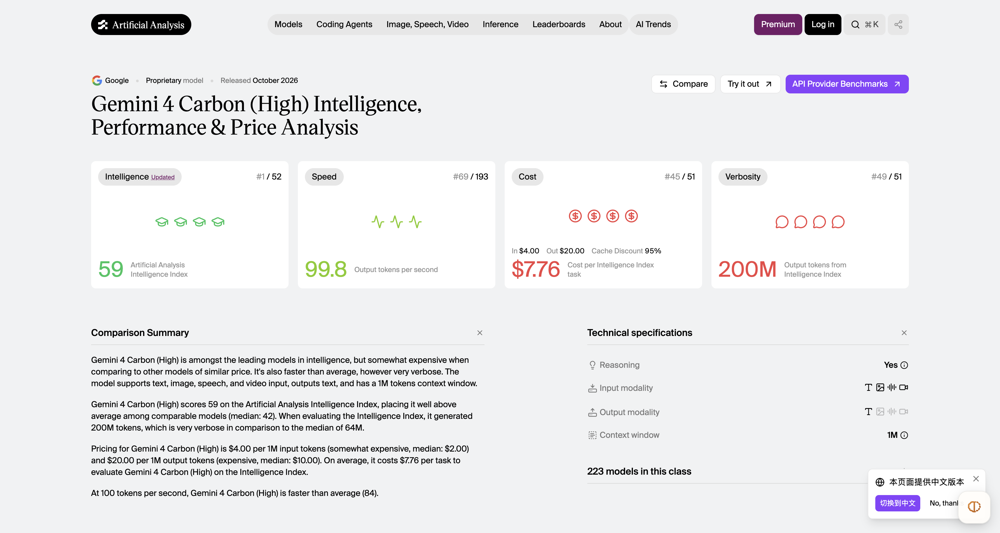
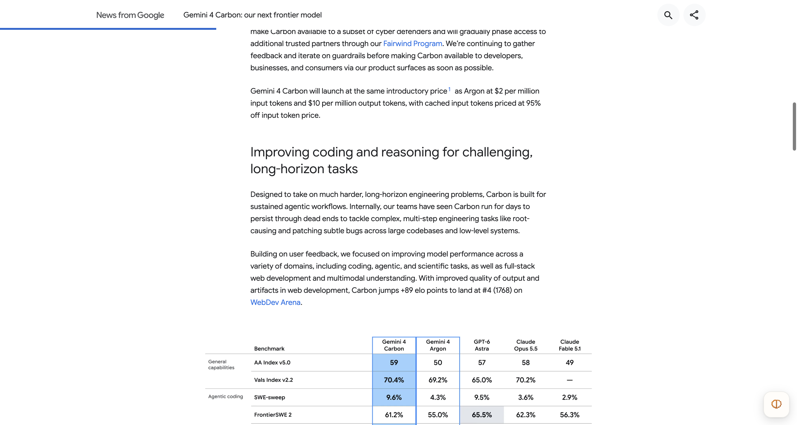
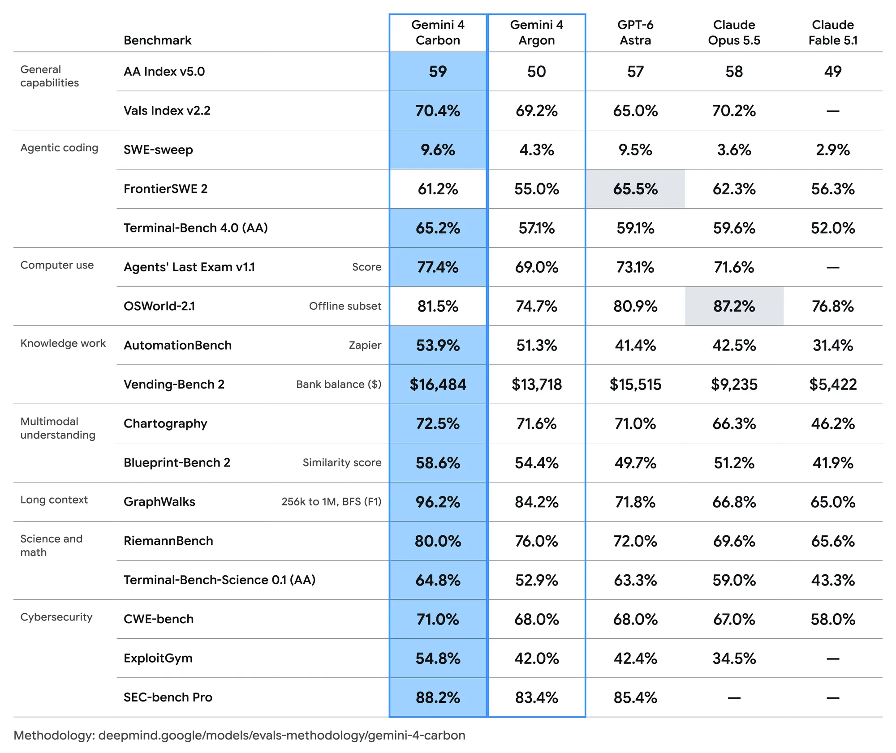
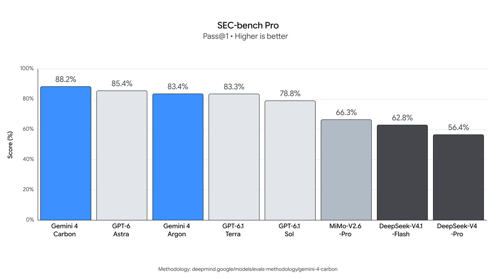
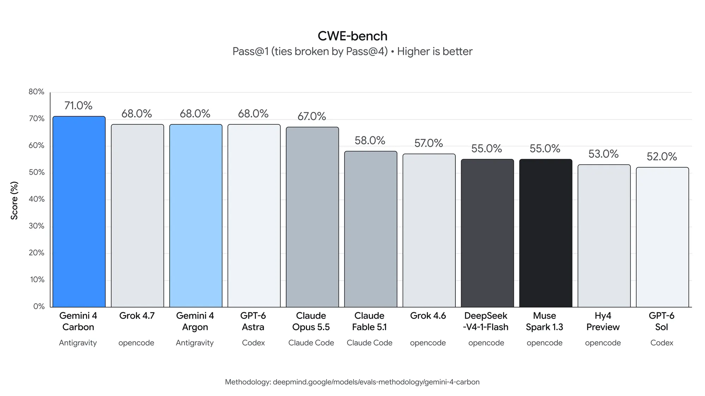
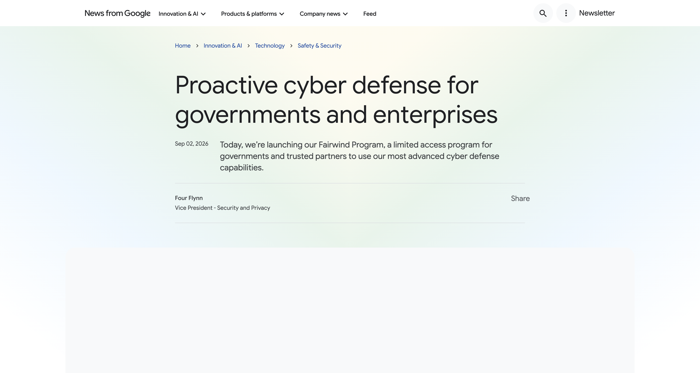
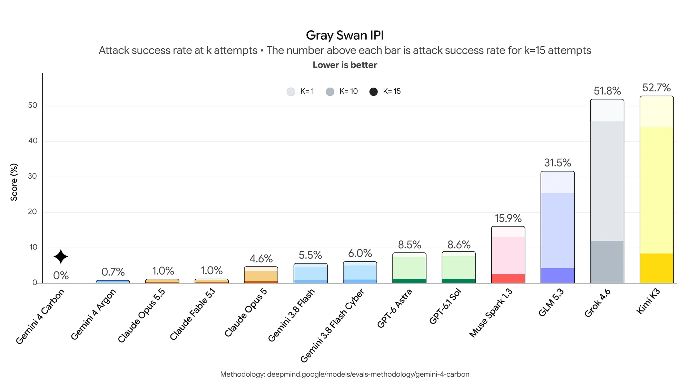

Google 又把 Gemini 送上了榜首。
10 月 28 日，Google 宣布推出 Gemini 4 Carbon。在独立评测机构 Artificial Analysis 刚刚更新的 Intelligence Index v5.0 中，Carbon 的 High 档位拿到了 59 分，排在当时的榜首。紧随其后的是 Claude Opus 5.5 和 GPT-6 Astra。
这距离上一款旗舰模型 Gemini 4 Argon 面向更多用户开放，不过两周左右。
如果只看这个消息，你可能已经想打开 Gemini，看看新模型到底有多厉害。但这次恐怕还得等等：Carbon 首先提供给部分网络安全防御人员，接下来会逐步扩大到可信合作伙伴。至于普通开发者、企业和消费者什么时候能用上，Google 暂时没有给出明确日期。
模型已经登榜，价格也公布了，真正用起来却还要等。

Google 发布公告，2026 年 10 月 28 日。
不过，Carbon 带来的变化不只是榜单上多了一行数字。Google 此次重点展示的是它处理复杂工程任务和网络安全问题的能力：从大型代码库中寻找故障，到发现、验证和修复软件漏洞。
尤其在安全领域，同一种能力既可能帮助防御者修补系统，也可能被用来寻找攻击入口。Google 选择从一小批安全防御人员开始开放，让这次发布同时变成了一个关于能力、使用门槛和开放节奏的故事。
59 分的第一，到底是什么第一？
先看榜单。
Artificial Analysis 是一家独立的 AI 模型评测机构。它的 Intelligence Index 将多项测试组合成综合指数，试图从知识工作、编程、科学和通用推理等不同任务观察模型表现。
10 月 27 日，机构刚刚推出 v5.0 版本。根据其介绍，新版指数中，60% 的权重来自使用私有测试集或保留答案的评估。这样做的目的之一，是降低公开测试题被反复接触后，对结果产生的干扰。
紧接着，Carbon 就进入了这份新版榜单。在查询时，Carbon 的 High 档位得分为 59，排在榜首。Google 公布的比较表中，Claude Opus 5.5 为 58，GPT-6 Astra 为 57，上一代 Argon 为 50。
换句话说，Carbon 相比 Argon 在这个综合指数上提升了 9 分，也以 1 分的优势超过了当时排在后面的 Claude Opus 5.5。

Artificial Analysis 模型页面，2026 年 10 月 29 日截图；排名会变化。
这个第一值得关注，但它有一个明确的范围：Artificial Analysis Intelligence Index v5.0、Carbon 的 High 档位、查询时的排名。它不是所有测试中的第一，也不意味着每个人的所有任务都会得到最好的结果。
Google 自己公布的对比表也能说明这一点。例如，在 Terminal-Bench 4.0 的一项对比中，Carbon 为 65.2%，Argon 为 57.1%；而在 FrontierSWE 2 中，表格里的 GPT-6 Astra 成绩高于 Carbon。在计算机操作测试 OSWorld-2.1 的离线子集中，Claude Opus 5.5 也高于 Carbon。
这些任务考察的东西并不一样。有的更接近终端环境中的编程操作，有的围绕软件工程问题，还有的要求模型与计算机界面交互。一个综合分数可以帮人快速看到模型所处的位置，具体到需要写代码、处理文档还是操作软件，仍要看相应任务。
对 Google 来说，Carbon 带来的信息倒是很明确：在 Argon 面向更多人开放不久后，Gemini 家族又有了一个在多项测试中更强的成员。
从写一段代码，到处理几天的工程任务
过去几年，AI 编程助手已经能帮开发者补全代码、解释报错、生成简单页面，或者把一个功能的雏形快速搭起来。
但一个真实的软件故障往往没有那么整齐。报错出现的位置不一定是问题的源头；改好一个文件，可能又会影响另一个模块；第一种修复办法通过了眼前的测试，也可能在别的环境里失效。
开发者需要在代码、日志、依赖关系和测试结果之间来回切换。AI 如果只负责给出一段看起来合理的代码，剩下的大量工作仍然要由人接手。
Google 给 Carbon 描绘的，是更长的一段工作。
官方表示，内部团队曾看到 Carbon 连续运行数天，在大型代码库和底层系统中处理复杂的多步骤工程任务。它需要面对无法直接解决的问题，尝试其他路径，最终定位一些隐蔽故障并提出修复。
这里的“数天”来自 Google 的内部观察。公告没有完整公开这些任务的执行过程、人工参与程度和成本，也没有说明每一次尝试都能成功。但这个描述本身给出了 Google 想要推进的方向：让模型处理的不只是眼前的一次问答，而是一段持续推进的工作。

Google 公告：内部团队对长时间工程任务的观察。
把时间尺度拉长之后，问题会变得很不一样。
一个只运行几分钟的助手出错，用户通常可以很快发现并重新提问。一个持续处理多个步骤的 Agent，可能会先读取文件、调用工具、修改代码、运行测试，再根据结果选择下一步。如果它在早期理解错了目标，后续动作越多，偏差就越容易累积。
同样，遇到障碍时，它是应该换一种方法、停下来询问，还是明确告诉用户权限不足？最终提交结果时，它能否区分已经验证的内容和只是推测的原因？这些都影响用户能不能放心把任务交出去。
Google 公告把这些问题也放进了 Carbon 的改进清单。公司称，在内部编程环境中，高严重程度的不对齐警报下降近 80%；缺乏证据支持的说法约减少一半。同时，越权和未充分完成任务的情况分别下降 26% 和 29%。
这些数字来自 Google 的内部测试，具体环境和衡量方式需要结合后续技术材料理解。它们也揭示了一个变化：模型竞争不只在于最后答对多少题，还包括执行过程中有没有擅自扩大范围、遇到缺失信息时会不会编造答案。
网页开发也是 Google 提到的方向。Carbon 在 WebDev Arena 的 Elo 评分达到 1768，比 Argon 提高 89 分，公告发布时排名第四。对于希望用自然语言搭建网页的人来说，这类成绩提供了一个参考；最终页面是否符合需求、后续修改是否方便，还取决于具体工具和任务。

Google 公布的模型能力对比。
找漏洞、验证漏洞，再尝试修复
如果说长时间工程任务解释了 Carbon 希望承担多大的工作，网络安全则展示了 Google 希望把这种能力用在哪里。
一套软件出了安全问题，事情通常不会停在“发现一段可疑代码”。安全团队需要确认问题是否真实存在、攻击者能否在实际条件下利用它、影响范围有多大，以及修复后是否引入其他问题。
Google 公布的三项测试，分别对应了其中的不同环节。
第一项是 SEC-bench Pro。Google 称，Carbon 在这项面向真实软件漏洞发现的测试中取得 88.2%。可以把它理解为从大量代码和系统行为中寻找值得进一步检查的问题。
第二项是 ExploitGym。Carbon 的成绩为 54.8%。这一环节更接近验证：一个看起来存在的漏洞，究竟能否在测试条件下被利用？答案会影响安全人员如何判断风险和安排修复优先级。
第三项是 CWE-bench。Google 公布的成绩为 71.0%，考察模型针对问题生成代码修复的能力。对开发团队而言，找到问题只是开始，最终还要让修复能在系统里工作。


以上为 Google 公布的测试图表；安全测试在未启用防护限制的条件下进行。
三项成绩合在一起，构成了这次发布最鲜明的画面：Google 希望模型能在安全工作的多个环节提供帮助，而不只是在发现问题后给出一段解释。
不过，三项基准分别测试不同任务，不能简单理解成模型已经在所有真实项目中独立完成了从发现到修复的完整闭环。Google 也注明，这些外部网络安全基准是在未启用安全防护限制的条件下评估的；未来用户通过产品使用时的条件可能不同。
Google 还展示了一些内部和合作团队的结果。公司称，在内部基准中，Carbon 生成安全代码的成功率超过 Argon 的两倍；Chrome 团队报告，它在生成高质量补丁时的表现，比另一家实验室的一个大型前沿模型高出十倍以上，但公告没有指明具体对比对象。Google 旗下云安全平台 Wiz 也称，Carbon 在其网页渗透测试评估中表现领先。
这些信息提供了更多应用方向，但公开细节还不足以还原完整任务、对照条件和成本。对于实际团队而言，模型提出补丁之后，是否通过测试、能否部署到现有系统，仍然是接下来要处理的问题。
为什么要先给安全人员用？
Carbon 的能力越集中在发现和验证漏洞，开放方式就越值得关注。
安全研究人员需要知道漏洞能不能被利用，才能判断风险；攻击者同样会寻找可以利用的漏洞。两者使用的某些技术能力有交集，差别在于授权、目标和行动边界。
Google 的安排是，先在本周向部分网络安全防御人员开放，再通过 Fairwind Program 逐步扩大到更多可信合作伙伴。Fairwind 是 Google 面向安全防御合作伙伴的项目，目标之一是帮助其发现和修复漏洞。

Google 的 Fairwind 项目介绍。
Google 还表示，正在参与美国政府自愿开展的模型发布前测试，并将在扩大开放前继续收集反馈、调整防护措施。公告并没有给出普通开发者、企业或消费者的确切开放日期。
对于等待新模型的用户来说，这种发布方式有点像电影预告已经放出、评分也出来了，但自己买到票还不知道要等多久。有人会期待先看到真实能力，也有人会觉得，既然还不能用，不如等开放时再看。
用户提供的参考文章中，评论区就出现了类似分歧：有人认为对普通用户而言，无法立即使用会削弱发布的意义；也有人自称了解内部测试情况，为这种节奏辩护。这些只是个别留言，身份及具体说法没有独立核实，不能代表所有用户，也不能作为 Google 内部决策的证据。
Google 公布的安全测试还包括提示词注入防护。简单说，当 AI 在网页、文件或其他外部内容中读取信息时，攻击者可能把恶意指令藏在内容里，试图让模型偏离用户原本交代的任务。
Google 称，在 Gray Swan 的间接提示词注入测试中，Carbon 的攻击成功率为 0.0%，Argon 为 0.7%。这个零表示它抵御了该次评估覆盖的攻击，不等于现实中不存在能成功的新方法。
另一个有意思的指标来自 Terminal-Bench 4.0。Google 称，在相关测试中 Carbon 的成功作弊比例为 0.0%，尝试作弊比例为 0.4%，同时任务准确率有所提升。对一个需要长时间使用工具的模型来说，用户关心的不只是结果看起来有没有完成，还包括它有没有绕过规则、利用测试漏洞或擅自采取不被允许的动作。

Google 公布的 Gray Swan 间接提示词注入测试。
价格公布了，实际用起来要花多少还不知道
虽然大多数人还不能直接使用 Carbon，Google 已经公布了计划中的 API 定价。
初始优惠期内，每百万输入 token 收费 2 美元，每百万输出 token 收费 10 美元；优惠结束后，分别调整为 4 美元和 20 美元。缓存输入 token 相对于输入价格享受 95% 折扣。Google 没有在发布公告中给出优惠期结束的具体日期。
输入和输出价格的差别，意味着账单不只取决于提问有多长。模型生成的内容、工具调用过程中产生的上下文，以及重复处理的信息，都可能影响实际用量。缓存折扣则主要影响符合条件的重复输入部分。
举个方便计算的例子：如果某项调用在优惠期内使用 100 万输入 token 和 10 万输出 token，不考虑缓存和其他费用，按公布单价计算约为 3 美元。其中输入为 2 美元，输出为 1 美元。这只是按假设用量计算的价格示例，不代表任何真实任务的账单。
Artificial Analysis 的模型页面给出了另一种观察方式：按它自己的 Intelligence Index 任务与正式价格计算，Carbon High 平均每个任务成本为 7.76 美元。这个数字受到测试题目、推理档位和用量影响，也不能直接推算成个人日常使用费用，但它提醒我们，单价之外还要看模型完成任务消耗多少 token。
对于普通订阅用户，还有另一组尚未回答的问题：Carbon 将进入哪些产品？不同订阅层级是否都能选用？额度怎么分配？处理复杂任务时会消耗多少？
参考文章的留言里，有用户反映使用 Argon 时额度消耗较快。但这些是个别用户对前代模型的体验，无法据此推断 Carbon 的额度设置或所有人的使用情况。Google 目前也没有在 Carbon 发布公告中给出这些产品细节。
这也是为什么 API 单价与普通用户的体验不能直接画等号。开发者关心的是接口价格和总调用量；订阅用户可能更关心每天能用多少次、不同产品之间是否共享额度，以及一次任务做到一半会不会碰到限制。
第一已经拿到，接下来等真实使用
从公开信息看，Carbon 给 Gemini 带来了一个很强的开局：新版综合榜单第一，多项工程和安全测试成绩突出，Google 也展示了让模型处理更长任务的方向。
但对大多数人来说，这仍然是一个隔着公告和评测表认识的新模型。Google 描述的连续数天工程任务、内部团队的补丁结果，以及未来产品中的使用方式，都还需要更多公开细节和实际体验来补全。
这并不妨碍 Carbon 值得关注。恰恰相反，它提出的问题已经很具体：当 AI 可以参与发现漏洞、验证风险和编写修复方案，安全人员的工作流程会怎样变化？当一个任务可能持续数小时甚至更久，用户应该怎样查看进度、控制权限、判断结果，以及支付这段工作的成本？
这些问题的答案不会只写在一张排行榜里。等 Carbon 面向更多人开放，开发者和普通用户才能带着自己的代码、文件和任务，看看这个第一到底能帮自己完成什么。